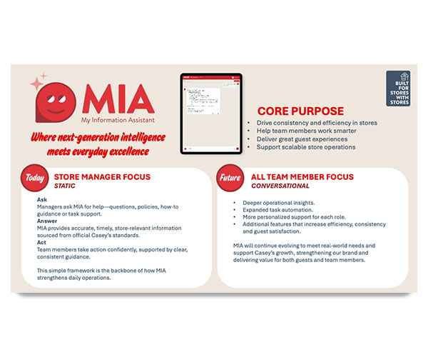
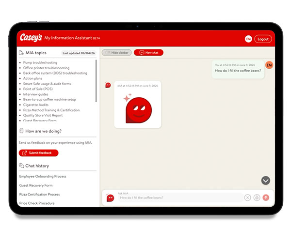

<section id="wingsContainer">
<div class="row">
<div class="column_half left_half"> 
  
  <!-- The Target Display Container -->
  <div class="targetContainer" style="margin-top: 15px; padding: 10px; border-radius: 8px;"> 
    
    <!-- Image Element (Hidden by default) --> 
     
    
    <!-- Video Element (Hidden by default) -->
    <video class="targetVideo" controls style="display: none; max-width: 100%; height: auto; max-height: 400px; border-radius: 4px; margin: auto;"> Your browser does not support the video tag. </video>
    
    <!-- The Buttons (Use your local relative file paths here) -->
	  <div class="row text-center">
     <button onclick="displayMedia('_images/mia-purposeslide.jpg', this)"></button>
	<button onclick="displayMedia('_images/mia-walkthrough.mp4', this)"></button>
    <button onclick="displayMedia('_images/mia-interviewslide.jpg', this)"></button>		  </div>
  </div>
  </div>
  <div class="column_half right_half">
    <h2>AI Chatbot - Mia</h2>
    <p class="text-center"> <span class="badge">App design</span> <span class="badge">Artificial intelligence</span> <span class="badge">Usability testing</span> <span class="badge">Interviews</span></p>
    <p>Problem: How can we help team members in stores find what they need fast?</p>
    <p>Solution: Provide the information in an intuitive way in a single system without needing to hunt around for the answers they need fast.</p>
<p>In this case, the solution was to build a RAG chatbot fed with the documents that team members need most. </p>
  </div>
</div>
</section>
